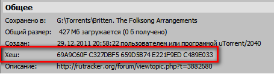
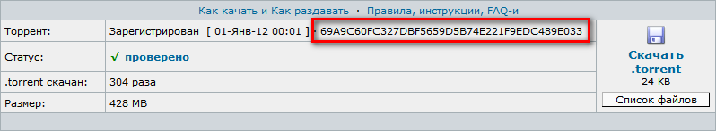
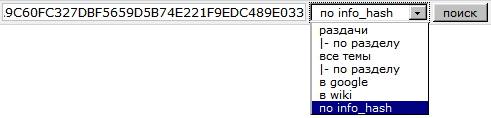

Хеш-сумма (info hash; далее — хеш) — шестнадцатеричное число, вычисляемое на основе содержимого секции info торрента. Хеш является уникальным идентификатором раздачи.
Где можно увидеть хеш раздачи?

(можно скопировать хеш, щёлкнув по нему правой клавишей мыши и выбрав Копировать.)

Как найти раздачу на трекере по хешу?
Введите хеш в поле для поиска, из выпадающего списка рядом выберите по info_hash:

Трекер автоматически переадресует вас на найденную раздачу.
Как скачать раздачу, зная только её хеш?
Из хеша можно составить магнет-ссылку. Наиболее простая форма ссылки:
magnet:?xt=urn:btih:ХЕШ
Например:
magnet:?xt=urn:btih:69A9C60FC327DBF5659D5B74E221F9EDC489E033
Полученную ссылку открыть в торрент-клиенте:
Для того, чтобы найти сидов, понадобится включить DHT.